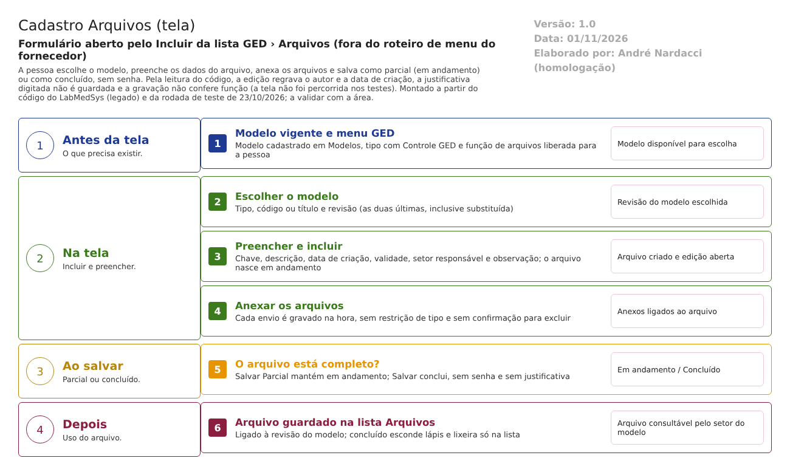

Fluxograma no arquivo 02-cadastro-de-arquivos.fluxo.json, em 4 fases e 6 etapas. Etapas, na mesma ordem do arquivo:
- Etapa 1. Ter o modelo e o menu: modelo em GED › Modelos, tipo com GED e função
DOCARQUIVO(Antes da tela). - Etapa 2. Escolher o modelo: tipo, código ou título e revisão (Na tela).
- Etapa 3. Preencher e incluir: chave, descrição, datas e setor; o arquivo nasce em andamento (Na tela).
- Etapa 4. Anexar e salvar: envio imediato dos anexos; Salvar Parcial ou Salvar (Na tela).
- Etapa 5. O arquivo está completo? (decisão): Salvar Parcial deixa em andamento; Salvar conclui, sem senha (Ao salvar).
- Etapa 6. Arquivo guardado, ligado à revisão do modelo, aparece na lista Arquivos (Depois).
Situações e histórico
Status do arquivo
- EM ANDAMENTO: criado na inclusão ou salvo com "Salvar Parcial".
- CONCLUÍDO: salvo com "Salvar". A lista esconde Editar e Excluir.
- Excluído (lixeira): marcado como excluído e não ativo; some da lista.
- Não há aprovação, revisão nem vigência: o arquivo não passa pelo ciclo do documento.
O que grava no histórico (log)
- O repositório compara valores antigos e novos de todas as colunas na alteração e na exclusão (Infra/Repositories/RepositoryBase.cs:291-360), com a justificativa fixa. O arquivo não tem configuração de nomes entre as quatro do módulo (Infra/LogConfig/) e a lista não tem o ícone Ver log; se o histórico existe no banco e onde se consulta é A confirmar no teste.
- O usuário e a data de criação do registro mudam a cada edição (RN-DOC-A06); portanto o "autor" do arquivo é o último que salvou.
O que não grava
- Quem concluiu, e com que assinatura.
- O motivo digitado da exclusão.
- A exclusão de anexo.
Dados
Tabelas do banco
| Tabela | Colunas principais | Chaves e ligações | Fonte |
|---|---|---|---|
| TBL_DOCUMENTO_ARQUIVO (fora dos scripts) | Código (a "chave"), descrição, ID do documento (modelo), data de inclusão, data de validade, setor responsável, observação, concluído, ativo, lixeira, datas e usuários | Documento (modelo) | Dom/Entities/DocumentoArquivo.cs:8-17; Infra/EntityConfig/DocumentoArquivoConfiguration.cs |
| TBL_ANEXO | Nome do arquivo, chave (GUID), tamanho, tipo de conteúdo, descrição, observação, ativo, lixeira, "é modelo", ID do arquivo | Documento e arquivo | Controllers/AnexoController.cs:130-175 |
TBL_DOCUMENTO (o código usa a versão _CONTROLE_DOC) |
O modelo escolhido: tipo, código, título, revisão, situação, setor | Tipo, situação | Ged:1214-1284 |
| Área de GED na nuvem | O arquivo físico do anexo, separado da área dos documentos | Armazenamento em nuvem, pela chave do anexo | AnexoController.cs:134 (GravarUploadArquivoGed) |
Leituras e gravações em outros módulos
| Módulo | O que é lido ou gravado | Meio | Fonte |
|---|---|---|---|
| Principal | Lista de setores (setor responsável, setor elaborador) | Chamada ao Principal | Ged:1286-1295 |
| Armazenamento em nuvem | Envio e leitura do arquivo do anexo | Biblioteca de armazenamento | Controllers/AnexoController.cs:130-140 |